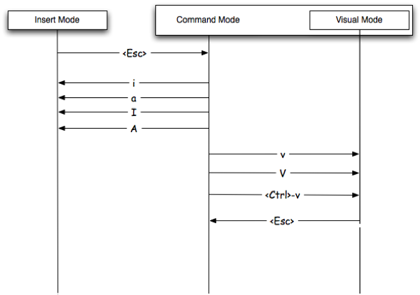

Learn to use and exit vi
Exit vim
- To exit vi, use this command:
:q. - If you made changes and want to quit without saving:
:q!
Editing modes
- When vi starts, it begins in command mode.
- To add some text to our file, we must first enter insert mode.
- To do this, we press the
ikey. - To exit insert mode and return to command mode, press the
esckey.
Saving Our Work
- In command mode type:
:w - To save and exit type:
:wq - A faster way to do
:wqisZZ :saveas ~/some/path/: save your file to that location.- if vim was opened wiithout any file as argument use
:x filenameto save it with a filename in pwd.
Verbs
- Verbs are action words.
d: deletec: changey: yank (copy)v: visually select (V for line)
Modifiers
- Modifiers are used before nouns to describe the way in which you're going to do something.
i: insidea: around- The difference between "inside" and "around" an object is whether it gets the spaces next to it as well.
<NUM>: number (e.g.:1, 2, 10)t: searches for a string and stops before it.T: searches for a string backwards and stops before it.f: searches for a string and lands on it.F: searches for a string backwards and lands on it./: find a string (literal or regex).
Nouns
w: words: sentence): sentence (another way of doing it).p: paragraph}: paragraph (another way of doing it).t: tag (think HTML/XML)b: block (think programming)
Building commands using nouns, verbs and modifiers
- Delete 2 words:
d2w - Change inside sentence (delete the current one and enter insert mode):
cis - Yank inside paragraph (copy the paragraph you're in):
yip - Change to period (change text from where you're at tothe next period):
ct.
Searching for text
- The most basic way to search in vim is like this:
/<stringToSearch>+ENTER - To go to the next occurence of the string press
n. - To go to the previous occurence of the string press
N. - To search backwards use
?instead of/:?<stringToSearch>+ENTER
Jumping to certain characters (these work only on the same line you're on).
- Jump forward and land on
<character:f< - Jump forward and land just before
<character:t< - Use
;to go to the next instance when you've jumped to a character - Use
,to go to the previous instance when you've jumped to a character
Moving around in your text
- Basic motions:
j: Move down one line, can be made to skip multiple lines using modifiers. Example:2jk: Move up one line.h: Move left one character.l: Move right one character.
- Moving within the line:
0: Move to the beginning of the line.$: Move to the end of the line.^: Move to the first non-blank character in the line.
- Moving by word:
w: Move forward one word.b: Move back one word.e: Move to the end of your word.
- Moving by sentence/paragraph:
): Move forward one sentence.(: Move backward one sentence.}: Move forward one paragraph.{: Move backward one paragraph.
- Moving within the screen:
H: Move to the top of the screen.M: Move to the middle of the screen.L: Move to the bottom of the screen.gg: Go to the top of the file.G: Go to the bottom of the file.^U: Move up half a screen.^D: Move down half a screen.^F: Page down.^B: Page up.
- Jumping back and forth:
CTRL-i: jump to your previous navigation location.CTRL-o: jump back to where you were.
- Other motions:
<lineNumber>+SHIFT+g: move to a given line number.:<lineNumber>: move to the given line number.^E: scroll up one line^Y: scroll down one line
Understanding modes

- Normal mode: This is the mode you start in, also known as command mode you can run commands in it.
- Insert mode: This is where you make changes to the file.
- Visual mode: This is mode where you can select text and do some powerful operations on it.
- Ex mode: This is where you get a
:prompt, and you can enter commands. You can run some powerful command-line stuff from there.
Basic change/insert operations
i: insert before the cursor.a: append after the cursor.I: insert at the beginning if the line.A: append at the end of the line.o: open a new line below the current line.O: open a new line above the current one.r: replace the once character under your cursor.R: replace the character under your cursor but just keep typing afterwards.c<m>: change whatever you define as a movement, e.g. a word, or a sentence, or a paragraph.C: change the current line from where you're at.s: substitute from where you are to the next command (noun).S: substitute the entire current line.
Changing case:
- You can change case using
~. - It works on the letter under the cursor or on a selection.
Deleting text
x: exterminate (delete) the character under the cursor.X: exterminate (delete) the character before the cursor.d<m>: delete whatever you define as a movement, e.g. a word, or a sentence, or a paragraph.dd: delete the current line.dt: delete delete from where you are to be period.D: delete to the end of the line.J: join the current line with the next one(delete what's between).
Undo and redo
u: undoCTRL+r: redo
Repeating actions
- You can use
.to repeat your last action. - Delete a word:
dw - Repeat above action 5 times:
5.
Copying and pasting
y: yank (copy) from where you are to the next command (noun).yy: a shortcut for copying the current line.p: paste the copied (or deleted) text after the current cursor position.P: paste the copied (or deleted) text before the current cursor position.
Substitution
- Change
footobaron every line::%s /foo/bar/g - Change
footobaron just the current line::s /foo/bar/g
Making things repeatable
- So let's say that you're adding a bit of text to the end of multiple lines, but you're only doing it where the line contains a certain string. You can accomplish that like so:
- Search for the string:
/delhi - Now, whenever you press the
nkey you'll teleport to the next instance of "delhi". So, starting at the first one, we're going to append some text. - Append some text to the end of the line:
A[has good street food][ESC] - Go to the next instance and append the text to the line:
n.
Text objects
- Word text objects
iw: inside a word.aw: around a word.- Examples:
- Delete a word:
daw - Change inside word:
ciw
- Delete a word:
- Sentence text objects
is: inside sentence.as: around sentence.- Example:
- Change around sentence:
cas
- Change around sentence:
- More object types:
- paragraphs:
ipandap - single quotes:
i'anda' - double quotes:
i"anda" - back tics:
i`anda` - paranthesis:
i(anda( - brackets:
i[anda[ - braces:
i{anda{ - tags:
itandat
- paragraphs:
Visual mode
- Perhaps the best thing to say about Visual Mode is that it magnifies the power of everything you've learned so far. It does this by allowing you to apply commands to the text that's currently highlighted.
- Entering the visual mode:
v: character based.V: line based.CTRL+v: paragraphs
- Often time you'll be inside some content that is surrounded on both sides by something, such as
,.({[. You can visually select these things by issuing commands like these: - Select inside of parenthesis:
vi( - Select around brackets:
va[ - You can also add a number to that to select two levels out (if you're inside a nested set).
- Select everything inside the second tier braces:
v2i{
Actions you can perform on visually selected text
- It's really your choice, but the most common operations are simply deletion, copy, and paste.
vwwy: Enter visual mode, select two more words of text and copy them.v6wy: Enter visual mode, select 6 words and copy them.Vjjd: Enter line-based visual mode and delete a couple of lines below.vip: Visually select an entire paragraph.vipyjjpVisually select an entire paragraph then paste it down below.
Combining visual mode with repetition
- If we want to prepend a colon in front of every line, you can simply put one in front of the first line, visually select all the lines below it, and then hit the
.key.
Macros
- They are used to record EVERYTHING you do and then doing it again when you replay. Here's a simple reference:
qa: start recording a macro named "a"q: stop recording@a: play back the macro.